PhpStorm Project¶
Make sure to have the latest PhpStorm available for a better support.
Create new project Vagrant based¶
1. Create new project¶
Open PhpStorm and select Create New Project from Existing File
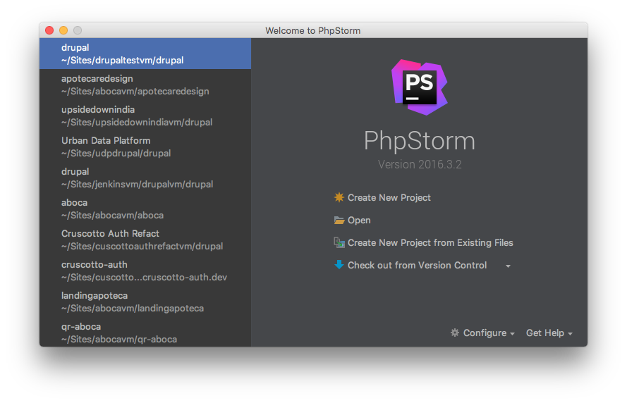
Select Sources file are in a local directory, no Web server is yet configured.
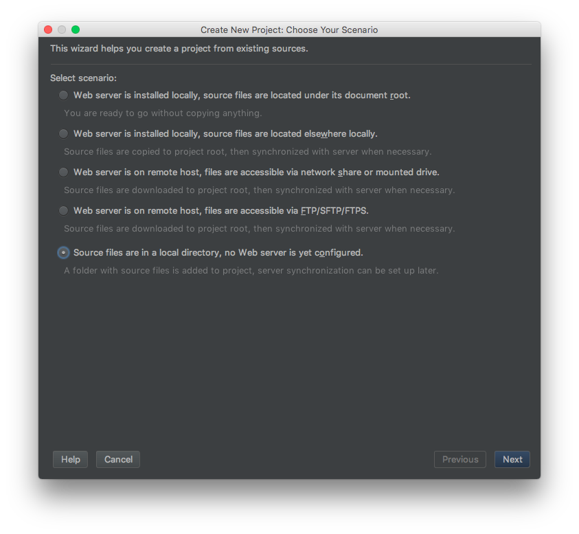
Select your Drupal installation directory on the local machine, make it the Project Root and click on Finish button
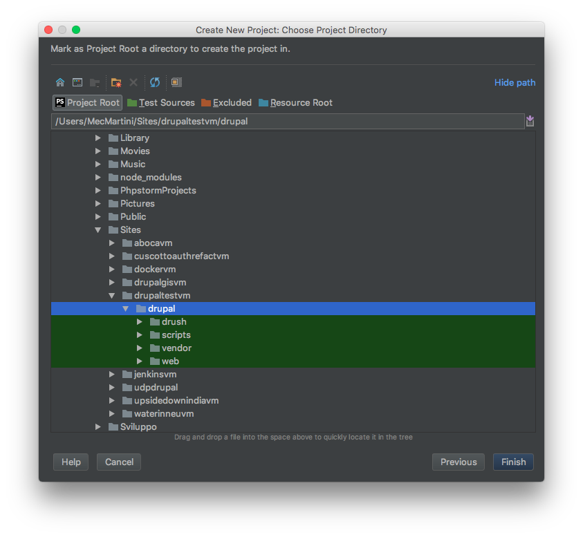
Once the project is created, PhpStorm will index your project files and must recognise it as a Drupal project. It should ask to enable the Drupal support. If not, enable it by yourself:
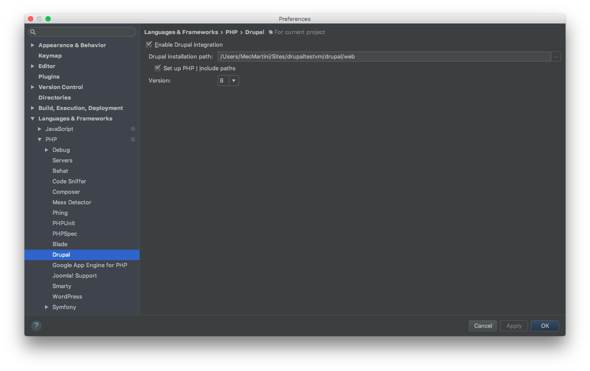
2. Integrate Vagrant¶
To let PhpStorm find the vagrant executable run the following on your local machine:
sudo ln -s /usr/local/bin/vagrant /usr/bin/vagrant
Note
in case the executable is in a different path then /usr/local/bin change it, you can find the vagrant path with whereis vagrant
To integrate Vagrant set the Instance Folder on the Vagrant settings:

Then select the Current Vagrant on SSH Terminal settings:
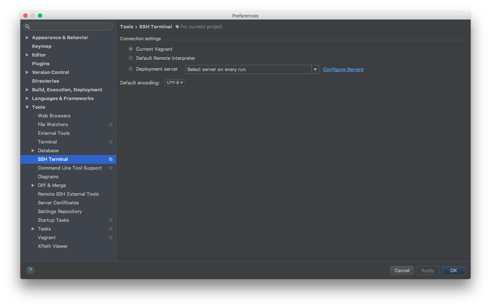
Create the new Vagrant Deployment server clicking on + button in the following settings:
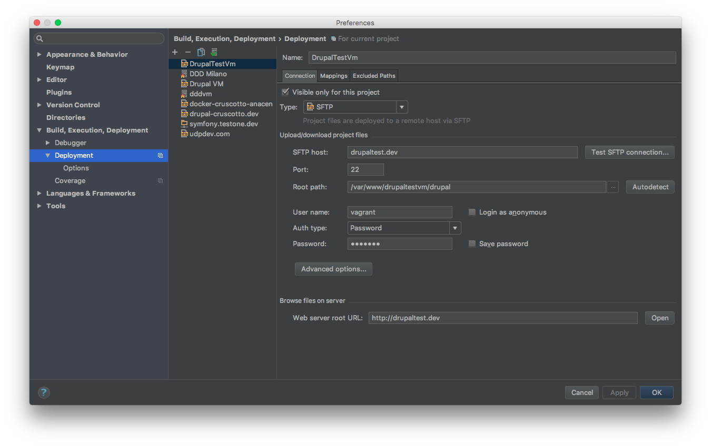
Enter a Name and select Type SFTP:
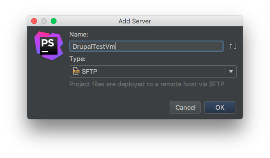
Click OK button and configure the rest as:
SFTP host: your vagrant_hostname Root path: your Drupal installation path on the vagrant machine Username: vagrant Password: vagrant
Go on the Mappings tab and set only the Deployment path on server with your Drupal installation path on the vagrant machine
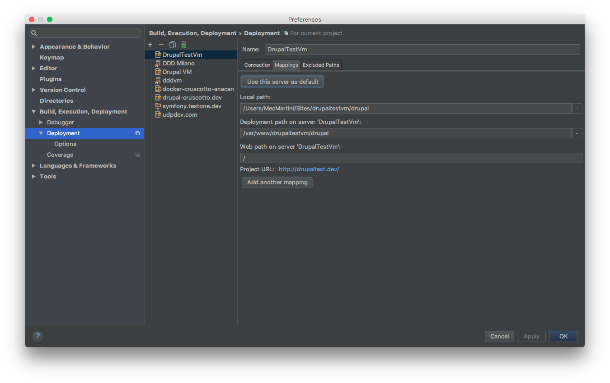
Set your vagrant PHP interpreter. From the following click on … of CLI Interpreter:
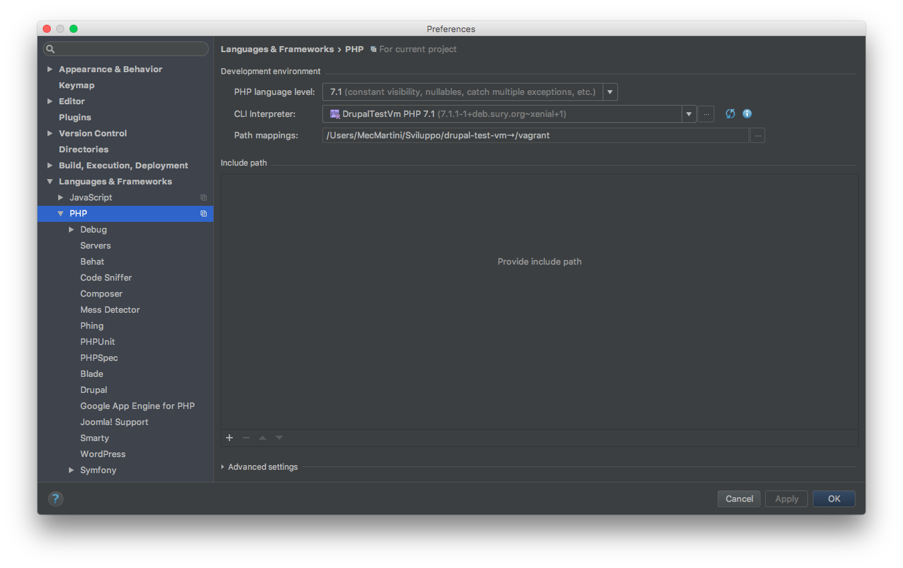
Click on + button and select Remote. Set the interpreter as below, selecting Vagrant and setting the Vagrant Instance Folder to your Vagrant folder:

Go to Settings -> PHP -> Servers and click on + button:
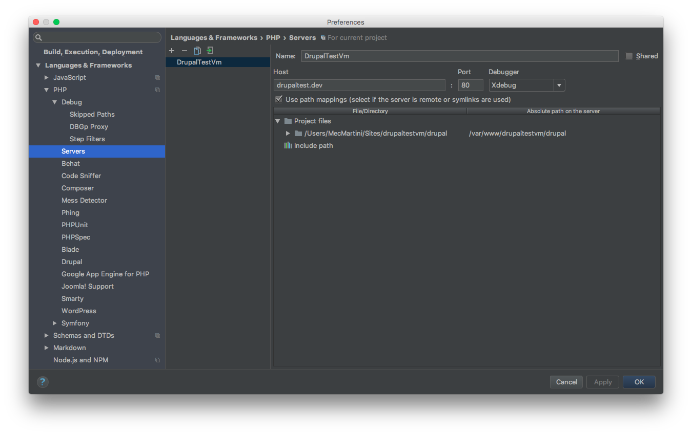
Set your Name and Host. Check Use path mappings and enter the Absolute path on the server to your drupal installation on vagrant machine.
Add GitHub repository and Initial Commit¶
Share the project on GitHub:
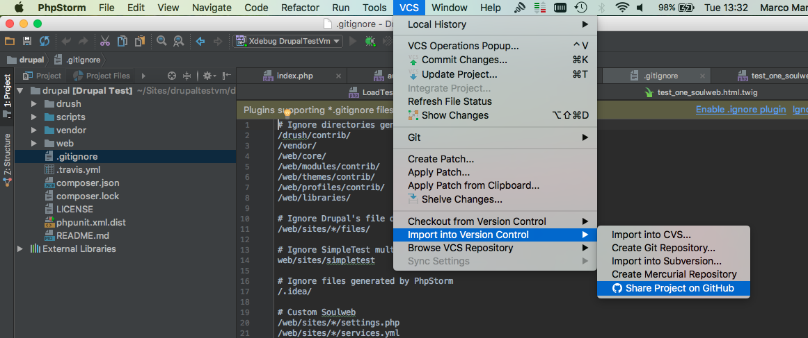
Write the New repository name, select private, if needed, and click on Share
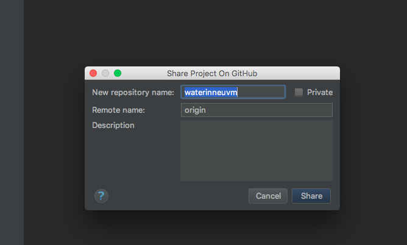
Add files for initial commit and push on git by clicking on OK button
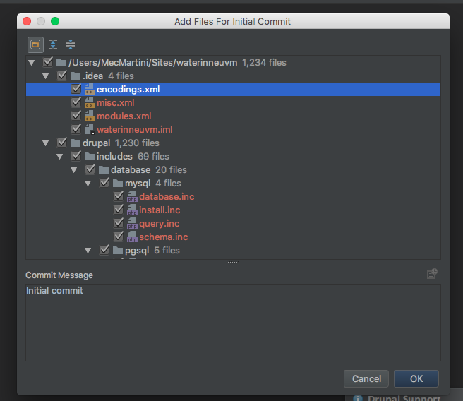
Import to existing GitHub repository and Initial Commit¶
Enable version control integration from PHPSTORM:
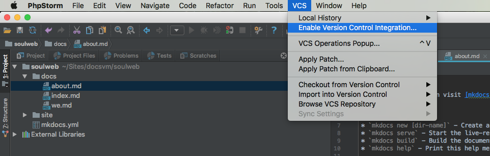
Set the Remote origin of the existing git repository adding the repository url (e.g. https://github.com/mecmartini/soulweb-docs.git)
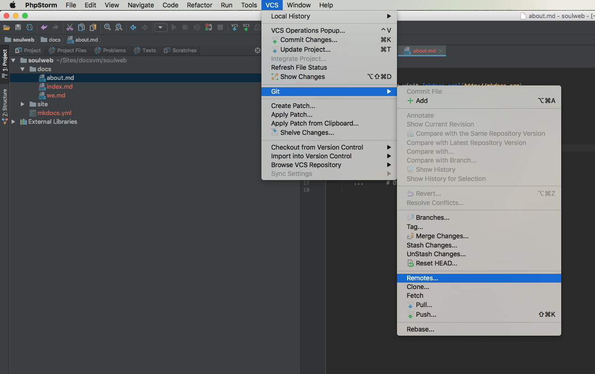
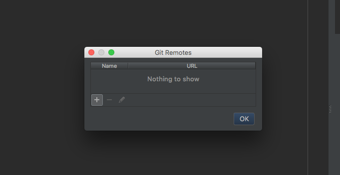
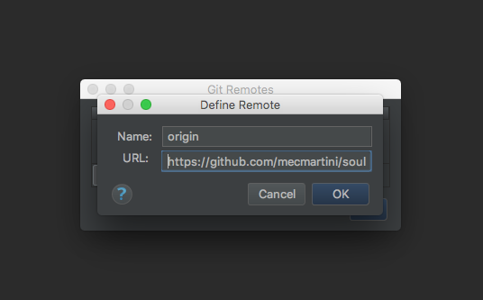
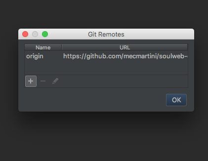
Push the initial commit (see Add GitHub repository and Initial Commit).
Plugin Requirements¶
Here are listed the required PhpStorm plugins for our development workflow.
Install/Enable PhpStorm Plugin¶
From your project settings go to Plugin:
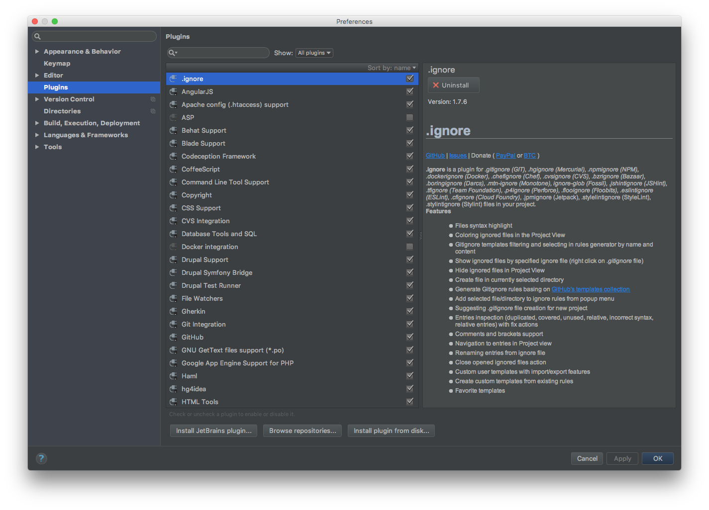
Search the required plugin on the list and enable it (click on the right checkbox of the plugin name).
If it's not listed you must install it. Press on Browse Repositories, search for your plugin, select it and click on Install on the right side:
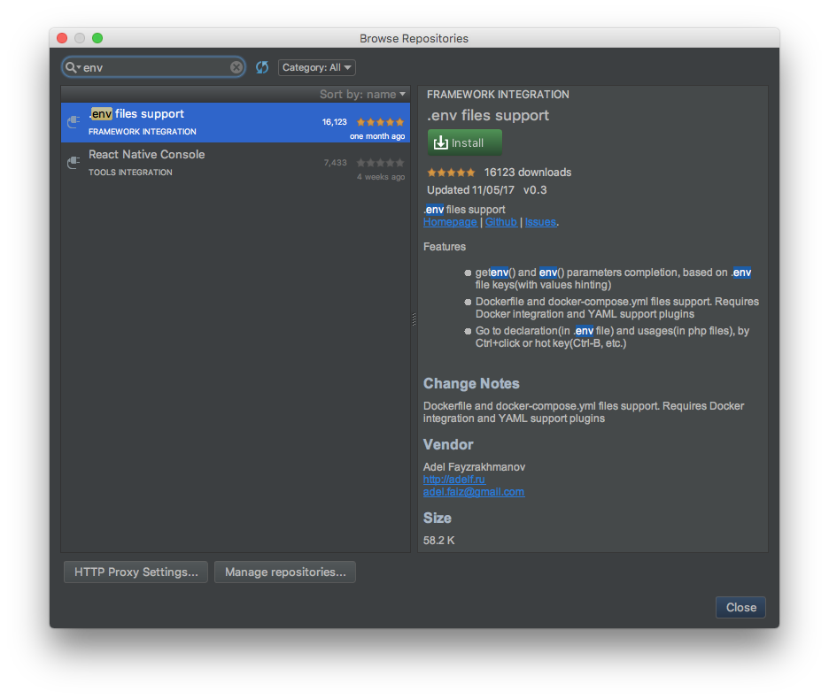
Close the Browse Repositories window. Now you'll find it on the list to enable it.
Drupal Symfony Bridge Plugin¶
Provides Symfony components support for Drupal in PhpStorm.
Pre Commit Hook Plugin¶
Plugin that allows you to run a hook prior commiting changes to any Version Control System. Good for Version Control Systems that doesn't allow you to run pre-commit-hook on the client side.